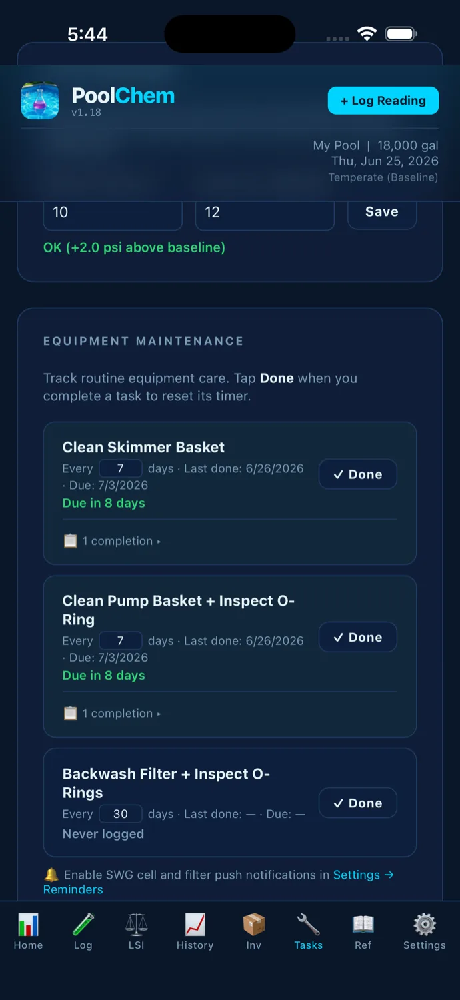

From test kit to balanced water — and everything else that keeps a pool running. No chemistry background needed.
Use whatever test kit or strips you already have. Enter your readings — free chlorine, pH, alkalinity, CYA, calcium hardness, and water temperature.

PoolChem Tracker analyzes every reading against ideal ranges and calculates your pool's overall health score — a single 0-100 number that tells you where you stand.

PoolChem Tracker calculates your LSI (Langelier Saturation Index) automatically. This tells you whether your water is corrosive, scale-forming, or perfectly balanced.

Every reading builds your history. Interactive trend charts show how each parameter changes over weeks and months — so you can see what's working and what's drifting.

Beyond chemistry, a healthy pool needs regular maintenance. The Tasks tab keeps your filter cleanings, SWG cell checks, and equipment inspections organized in one place.

Full Langelier Saturation Index with CYA-corrected alkalinity, polynomial temperature factors, and salt-adjusted TDS. Not the simplified version. Calculates from your actual test readings, not backwards from a target LSI.
Five components scored out of 20 — FC, combined chlorine, pH, LSI, and CYA. One number that tells you if your water is balanced.
Chemical recommendations based on your pool volume, current readings, and target ranges. Prioritized so you fix the most important thing first.
Interactive graphs for every parameter. See how your chemistry changes over weeks and months. Spot seasonal patterns and drift.
Configurable reminders for water testing, filter cleaning, SWG cell maintenance, and chemical inventory checks.
Track what chemicals you have on hand. Know when you're running low before you need to make a pool store run.
Chlorine pools, salt water generators, and everything in between. Configure your setup and get tailored recommendations.
Export your complete reading history as a CSV file. Import previous readings. Your data is always yours.
Download free. Upgrade to Pro for $4.99 — one time, no subscription.